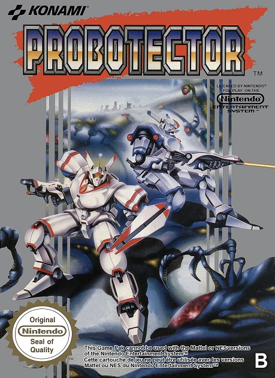
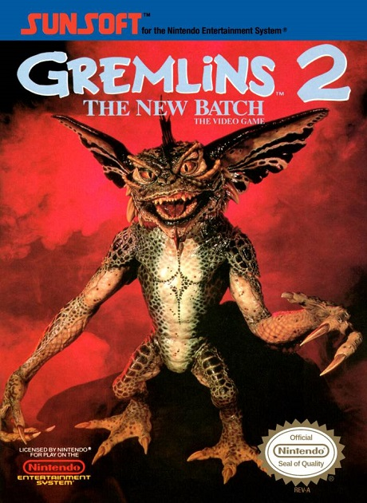
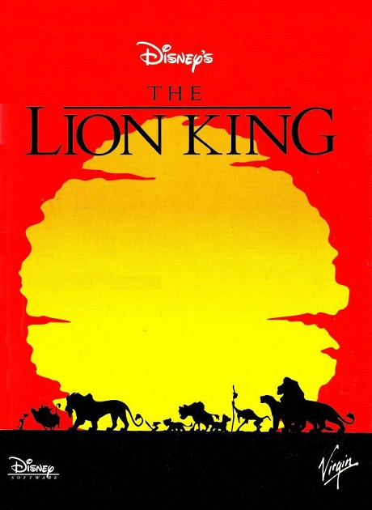
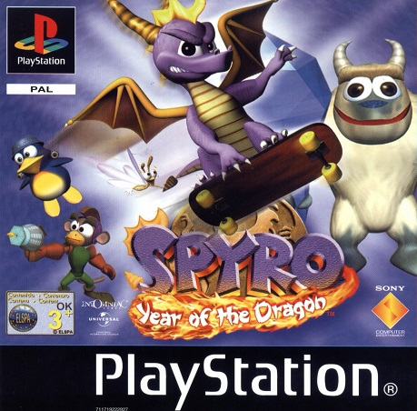
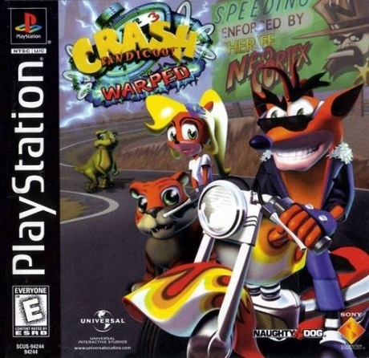
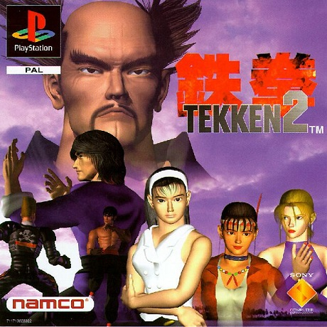
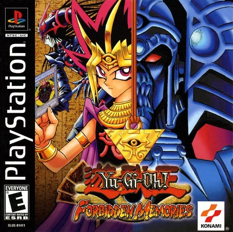
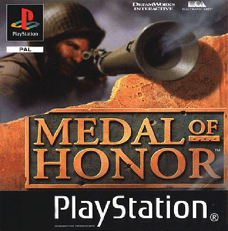
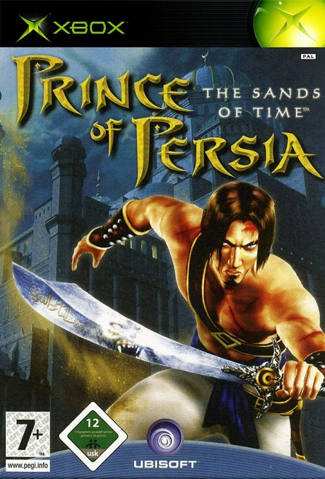
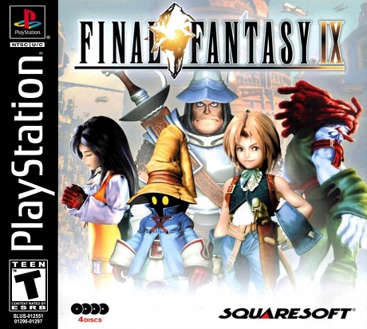

Console : originellement sortie pour borne d'arcade il a été adapté sur plusieurs consoles, j'y ai joué sur NES
Fun fact : la version originale s'appelle "Contra" et mettais en scene des mercenaires qui ont été transformés
en robots dans la version européenne pour minimiser la violence

Gremlin 2 : The New Batch
Année de sortie : 1990
Developpeur : SunSoft
Console : NES , il existe aussi une version GameBoy
Fun fact : je n'ai jamais compris ce qu'il fallait y faire et passait mon temps a tomber dans des trous, des bons souvenirs

Le Roi Lion
Année de sortie : 1994
Developpeur : Westwood Studios
Console : NES , il a été a la base developpé pour Super NES mais ils l'ont porté sur NES quand même
Fun fact : c'était hyper dur, affreux, j'en fais encore des cauchemards

Spyro 3 Year of the Dragon
Année de sortie : 2008
Developpeur : Insomniac Games
Console : PS1, il est sorti ensuite sur PSP (la meilleur console du monde) et il y a eu un remake sur PS3
Fun fact : le jeu est super, on a passé toute la nuit dessus avec un pote, on l'a fait d'une traite. Les controls étaient quand même un peu appproximatifs mais c'était cool.

Crash Bandicoot 3 - Warped
Année de sortie : 1998
Developpeur : Naughty Dog
Console : PS1
Fun fact : J'avais joué au deux premiers mais celui là je l'ai saigné, le jeu est juste parfait

Tekken 2
Année de sortie : 1995
Developpeur : Namco
Console : originellement developpé pour borne d'arcade il est sorti sur PS1 un an plus tard en 1996
Fun fact : mon premier jeu de combat, je n'y comprenais rien mais en mashant les boutons ça envoyait des patates de forains. Evidemment plus fort on appuis sur la manette et mieux ça marche.
Je pense que c'est le premier jeu sur lequel j'ai eu vraiment mal au pouce avec la croix directionelle de la manette de PS, il n'y avait pas de stick

Yu-Gi-Oh! Forbidden Memories
Année de sortie : 2003
Developpeur : Konami
Console : PS1
Fun fact : en jouant à ce jeu j'aurais tellement voulu avoir des lunettes pour pouvoir les pousser sur mon nez et dire "Ah tu est tombé dans ma carte piège!"
mais je n'avais pas de lunettes. En vrai le jeu est completement claqué au sol mais c'était Yu-Gi-Oh alors c'était bien. Truc marrant on pouvait gagner une monaie dans le jeu
pour acheter des cartes mais pour pouvoir les acheter il fallait le code se trouvant sur les vrais cartes du jeu achetables en boutique, c'est fou!

Medal of honor
Année de sortie : 1999
Developpeur : DreamWorks interactive
Console : PS1
Fun fact : la satisfaction d'un headshot dans la face d'un pote et la terrible frustration de jouer contre certains qui n'utilisent que le panzer.
J'ai passé la majorité de mon temps sur ce jeu à jouer contre des amis mais je regardais ma soeur faire la campagne, c'est à ce moment là que j'ai compris ce qu'était un(e) rageux(se)

Prince of Persia : Les sables du temps
Année de sortie : 2004
Developpeur : Ubisoft
Console : Xbox
Fun fact : Mon premier jeu sur Xbox, un des jeux qui a contribué à l'avancée des jeux de plateforme. Le story telling était super. Un vrai bonheur jusqu'a la salle des gardes à la fin qui m'a donné envie
de m'énucléer à la petite cuillère mais très satisfait d'enfin la passer.

Final Fantasy 9
Année de sortie : 2001
Developpeur : SquareSoft
Console : PS1
Fun fact : Une dinguerie, mon premier JRPG, c'est ce jeu là qui m'a donné envie de continuer à jouer. Les personnages sont trop cool, l'histoire est géniale et l'univers est juste
trop sympa à découvrir. C'est aussi le premier jeu avec plus d'un CD auquel j'ai joué, je ne sais pas pourquoi mais ça m'a marqué.
Tellement de souvenir, je me le refait une fois tout les ans à peu prêt et j'en ai pas marre.

Voila une video du Memoria Project qui recrée Final Fantasy 9 avec des graphismes modernes, ça fait rêver